南投縣立南投國民中學 · 115 學年度 · 三天二夜
畢業旅行 行前說明簡報
國境之南・知性采風與冒險狂歡（去個資版）
活動時間：115.10.21 (三) ～ 115.10.23 (五) ｜ 集合時間：10/21 07:30 學校中庭集合
隨團指導：劉O彥 校長、董O遠 學務主任、姚O勤 訓育組長 暨 九年級全體導師
AGENDA ＆ MAP
畢旅三天行程地圖與住宿資訊
- Day 1（10/21 三）：學校集合 ➔ 田寮月世界 ➔ 國立海洋生物博物館 ➔ 貓鼻頭風景區 ➔ 墾丁福華渡假大飯店 ➔ 墾丁大街夜巡
- Day 2（10/22 四）：晨喚早餐 ➔ 飯店沙灘趣味競賽 (淨灘踏浪) ➔ 前往高雄 ➔ 義大遊樂世界 (特洛伊城) ➔ 義大世界購物廣場 ＆ 摩天輪 ➔ 高雄義大天悅飯店
- Day 3（10/23 五）：旗津海岸公園 ＆ 星空隧道 ＆ 旗後砲台 ➔ 港都午餐 ➔ 奇美博物館 ➔ 名間親子生態園區 ➔ 快樂賦歸南投國中
🏨 10/21 (三) 墾丁福華渡假大飯店
特色：座落國境之南、緊鄰小灣沙灘與墾丁大街。
🏨 10/22 (四) 高雄義大天悅飯店
特色：義大世界核心，鄰近購物廣場與海拔215公尺摩天輪。
DAY 1 行程細節 · 115/10/21 (星期三)
南下探索・惡地奇景與國境之南海生館
| 時間節點 | 行程與活動內容 |
|---|---|
| 07:30 | 學校中庭集合出發（各班班長清點回報） |
| 08:00~10:00 | 國道風光、車上行車安全宣導與育樂 |
| 10:00~11:30 | 田寮月世界：欣賞泥岩惡地特殊地質、攬月樓 |
| 11:45~12:45 | 享用合菜美味午餐（依分配桌次整齊就座） |
| 13:30~16:00 | 國立海洋生物博物館：台灣水域、珊瑚王國、世界水域 |
| 16:20~17:30 | 貓鼻頭風景區：台灣海峽與巴士海峽交界裙礁 |
| 18:00~19:00 | 美味晚餐 ➔ 辦理入住墾丁福華渡假大飯店 |
| 19:20~21:00 | 導師領隊帶領夜探墾丁大街 ➔ 21:30 晚點名查房就寢 |
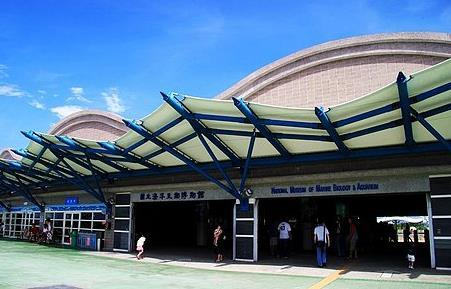
DAY 2 行程細節 · 115/10/22 (星期四)
沙灘踏浪・義大冒險與璀璨摩天輪
| 時間節點 | 行程與活動內容 |
|---|---|
| 07:00~08:00 | 晨喚・墾丁福華飯店內享用豐盛自助早餐 |
| 08:20~09:50 | 飯店沙灘趣味競賽（分組環保淨灘、海濱踏浪） |
| 10:10~12:00 | 專車前往高雄大樹區義大世界 |
| 12:00~17:30 | 義大遊樂世界：特洛伊城木馬、室內暗室雲霄飛車、飛越台灣（午餐發放餐券 100 元） |
| 17:30~20:00 | 義大世界購物廣場 ＆ 搭乘高空摩天輪（晚餐美食街自理） |
| 20:30 | 夜宿高雄義大天悅飯店，分配房卡進房 |
| 21:30 | 晚點名查房，安靜盥洗休息就寢 |
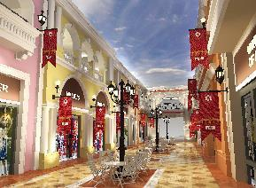
DAY 3 行程細節 · 115/10/23 (星期五)
港都采風・奇美文藝殿堂・快樂賦歸
| 時間節點 | 行程與活動內容 |
|---|---|
| 07:00~08:00 | 晨喚・天悅飯店自助早餐 ➔ 整理行李退房出發 |
| 08:20~11:00 | 旗津風景區采風巡禮：星空隧道、旗後砲台、天后宮、旗津老街 |
| 11:30~12:30 | 港都海味午餐（合菜） |
| 13:30~16:00 | 奇美博物館：西洋美學雕塑、動物自然史、名琴樂器與阿波羅噴泉廣場 |
| 16:30~17:30 | 名間親子生態園區：5米彩虹溜滑梯、全齡共融遊具、大合影紀念 |
| 17:30~18:00 | 快樂賦歸！平安返抵南投國中，互道珍重回可愛的家！ |
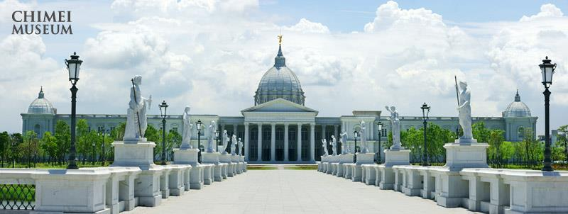
ORGANIZATION
團務車次與隨車師長分配（去個資版）
| 車次 | 班級分配 | 男生 | 女生 | 合計 | 素食 | 隨車行政與導師名單 |
|---|---|---|---|---|---|---|
| 1 車 | 904 全部 | 10 | 9 | 19 | 1 | 董O遠 學務主任、蔡O秀 導師（素、眷屬同房） |
| 2 車 | 901 全部、902 男4 女7 | 15 | 15 | 30 | 0 | 吳O萱 導師、黃O英 導師 |
| 3 車 | 903 全部、902 男4 女4 | 15 | 16 | 31 | 0 | 陳O綸 導師 |
| 4 車 (丁車) | 905 全部 | 11 | 10 | 21 | 0 | 施O婷 導師 |
| 5 車 | 906 全部 | 13 | 11 | 24 | 0 | 石O洋 導師 |
| 6 車 | 907 全部、908 全部 | 17 | 14 | 31 | 0 | 孫O惠 導師、李O嘉 導師 |
| 7 車 | 909 全部 | 10 | 12 | 22 | 1 | 姚O勤 訓育組長、黃O姿 導師 |
| 合計 | 全體九年級 | 91 | 87 | 178 | 2 | 隨團師長共 12 位（男5、女6、素2、眷1） |
CHAPERONES
隨團師長雙晚分房對照表（去個資版）
| 職稱 | 姓名 | 10/21 福華 | 10/22 天悅 | 車次 |
|---|---|---|---|---|
| 校長 | 劉O彥 | － | 746 | 公務 |
| 學務主任 | 董O遠 | 4056 | 747 | 1 車 |
| 902 導師 | 黃O英 | 4058 | 748 | 2 車 |
| 908 導師 | 李O嘉 | 4060 | 750 | 6 車 |
| 訓育組長 | 姚O勤 | 3058 | 740 | 7 車 |
| 904 導師 | 蔡O秀 | 3058 | 740 | 1 車 |
| 職稱 | 姓名 | 10/21 福華 | 10/22 天悅 | 車次 |
|---|---|---|---|---|
| 907 導師 | 孫O惠 | 3060 | 742 | 6 車 |
| 909 導師 | 黃O姿 | 3060 | 742 | 7 車 |
| 906 導師 | 石O洋 | 3062 | 752 | 5 車 |
| 905 導師 | 施O婷 | 3062 | 752 | 4 車 |
| 901 導師 | 吳O萱 | 3064 | 756 | 2 車 |
| 903 導師 | 陳O綸 | 3064 | 756 | 3 車 |
CLASS 901 · 隨車 2 車
901 班分房與桌次名冊（男 11、女 8，計 19 人）
🏨 10/21 墾丁福華渡假大飯店
• (男) 2141：簡O翔(桌1)、簡O錤(桌2)、賴O育(桌1)、楊O翰(桌1)、鄒O陞(桌1)、廖O豪(桌1)
• (男) 2142：吳O成(桌2)、林O紘(桌2)、陳O潾(桌2)、陳O宥(桌2)、黃O榤(桌1)
• (女) 3082：林O汝(桌1)、賴O羽(桌1)、劉O妤(桌1)、鄧O云(桌1)
• (女) 3084：田O羽(桌2)、朱O融(桌2)、陳O涵(桌2)、陳O妡(桌2)
🏨 10/22 高雄義大天悅飯店
• (男) 501：簡O翔、簡O錤、賴O育、鄒O陞
• (男) 502：吳O成、林O紘、陳O潾、黃O榤
• (男) 503：楊O翰、廖O豪、陳O宥
• (女) 546：林O汝、賴O羽、劉O妤、鄧O云
• (女) 547：田O羽、朱O融、陳O涵、陳O妡
CLASS 902 · 拆分 1 車 / 2 車
902 班分房與桌次名冊（男 8、女 11，計 19 人）
🏨 10/21 墾丁福華渡假大飯店
• (男) 2122：古O弘(桌3)、黃O翊(桌3)、楊O正(桌3)、楊O傑(桌3)
• (男) 2123：吳O億(桌3)、王O群(桌3)、陳O祺(桌3)、楊O諺(桌3)
• (女) 3031：吳O霏(桌4)、沈O語(桌4)、林O安(桌4)、張O瑄(桌4)
• (女) 3033：陳O蒨(桌4)、陳O潔(桌4)、鄒O璇(桌4)、歐O臻(桌4)
• (女) 3035：王O恩(桌3)、劉O圻(桌4)、蔡O喬(桌4)（+906班1人）
🏨 10/22 高雄義大天悅飯店
• (男) 509：古O弘、楊O傑、吳O億、楊O諺
• (男) 511：王O群、陳O祺、黃O翊、楊O正
• (女) 548：吳O霏、沈O語、林O安、張O瑄
• (女) 549：陳O蒨、陳O潔、鄒O璇、歐O臻
• (女) 550：王O恩、劉O圻、蔡O喬（+906班1人）
CLASS 903 · 隨車 3 車
903 班分房與桌次名冊（男 11、女 12，計 23 人）
🏨 10/21 墾丁福華渡假大飯店
• (男) 2137：施O佑(桌6)、陳O侑(桌6)、廖O鈞(桌6)（+905班3人）
• (男) 2124：蔡O君(桌7)、張O煒(桌6)、陳O潣(桌6)、黃O鈞(桌7)
• (男) 2125：簡O霖(桌5)、曾O智(桌5)、施O圻(桌5)、洪O彬(桌5)
• (女) 3056：林O儒(桌5)、張O禎(桌5)、楊O頵(桌5)、蕭O瑩(桌5)
• (女) 3068：朱O芯(桌6)、賴O如(桌6)、廖O霓(桌6)、彭O璇(桌6)
• (女) 3070：林O玫(桌5)、簡O鎣(桌6)、程O玹(桌5)、葉O瑄(桌6)
🏨 10/22 高雄義大天悅飯店
• (男) 512：蔡O君、張O煒、陳O潣、黃O鈞
• (男) 515：簡O霖、曾O智、施O圻、洪O彬
• (男) 516：施O佑、陳O侑、廖O鈞（+904班1人）
• (女) 540：林O儒、張O禎、楊O頵、蕭O瑩
• (女) 542：朱O芯、賴O如、廖O霓、彭O璇
• (女) 543：林O玫、簡O鎣、程O玹、葉O瑄
CLASS 904 · 隨車 1 車
904 班分房與桌次名冊（男 10、女 9，計 19 人）
🏨 10/21 墾丁福華渡假大飯店
• (男) 2135：王O億(桌8)、石O愷(桌8)、林O羽(桌7)、姚O城(素)、羅O鈞(桌8)、王O(桌8)
• (男) 2126：許O崴(桌7)、蔡O緯(桌7)、鄧O康(桌8)、鍾O洧(桌7)
• (女) 3072：王O茹(桌8)、翁O涵(桌8)、黃O芳(桌7)、胡O紜(桌7)
• (女) 3074：林O妮(桌8)、蔡O霏(桌7)、謝O倢(桌7)、藍O媗(桌8)
• (女) 3076：黎O蓉(桌8)（+907班3人）
🏨 10/22 高雄義大天悅飯店
• (男) 516：姚O城(素)（+903班3人）
• (男) 517：王O億、石O愷、羅O鈞、王O
• (男) 518：許O崴、蔡O緯、鍾O洧、林O羽
• (男) 519：鄧O康（+905班3人）
• (女) 560：黎O蓉（+907班3人）
• (女) 561：王O茹、翁O涵、黃O芳、胡O紜
• (女) 562：林O妮、蔡O霏、謝O倢、藍O媗
CLASS 905 · 隨車 4 車
905 班分房與桌次名冊（男 11、女 10，計 21 人）
🏨 10/21 墾丁福華渡假大飯店
• (男) 2137：湯O綸(桌10)、蕭O均(桌10)、簡O鈞(桌10)（+903班3人）
• (男) 2127：熊O捷(桌9)、林O穎(桌9)、林O弘(桌9)、羅O惟(桌10)
• (男) 2128：陳O璋(桌9)、陳O佑(桌9)、楊O樺(桌10)、葉O修(桌10)
• (女) 3041：林O婕(桌9)、林O慧(桌9)（+906班2人）
• (女) 3043：廖O玉(桌10)、張O涵(桌10)、張O潼(桌10)、曾O瑜(桌10)
• (女) 3045：谷O愛(桌9)、林O渝(桌9)、黃O蓉(桌9)、廖O涵(桌9)
🏨 10/22 高雄義大天悅飯店
• (男) 519：湯O綸、蕭O均、簡O鈞（+904班1人）
• (男) 520：熊O捷、林O穎、林O弘、羅O惟
• (男) 521：陳O璋、陳O佑、楊O樺、葉O修
• (女) 553：林O婕、林O慧（+906班2人）
• (女) 555：廖O玉、張O涵、張O潼、曾O瑜
• (女) 556：谷O愛、林O渝、黃O蓉、廖O涵
CLASS 906 · 隨車 5 車
906 班分房與桌次名冊（男 13、女 11，計 24 人）
🏨 10/21 墾丁福華渡假大飯店
• (男) 2138：王O倫(桌18)、吳O彥(桌11)、張O昕(桌11)、張O璽(桌11)、黃O翰(桌11)、黃O程(桌18)
• (男) 2139：黃O揚(桌11)、陳O聖(桌18)、邱O辰(桌18)（+907班3人）
• (男) 2129：陳O廷(桌12)、蔡O哲(桌12)、蕭O堯(桌12)、鄒O丞(桌12)
• (女) 3035：張O芸(桌11)（+902班3人）
• (女) 3037：張O卉(桌11)、郭O瑄(桌11)、黃O誼(桌11)、黃O貽(桌11)
• (女) 3039：簡O涵(桌12)、許O慈(桌12)、陳O樂(桌12)、王O文(桌12)
• (女) 3041：簡O霓(桌12)、林O甄(桌12)（+905班2人）
🏨 10/22 高雄義大天悅飯店
• (男) 522：陳O廷、蔡O哲、蕭O堯、鄒O丞
• (男) 523：王O倫、黃O程、陳O聖、邱O辰
• (男) 525：吳O彥、張O昕、張O璽、黃O翰
• (男) 526：黃O揚（+907班3人）
• (女) 550：張O芸（+902班3人）
• (女) 551：張O卉、郭O瑄、黃O誼、黃O貽
• (女) 552：簡O涵、許O慈、林O甄、王O文
• (女) 553：簡O霓、陳O樂（+905班2人）
CLASS 907 · 隨車 6 車
907 班分房與桌次名冊（男 11、女 11，計 22 人）
🏨 10/21 墾丁福華渡假大飯店
• (男) 2139：金O賢(桌14)、張O二(桌14)、廖O豐(桌14)（+906班3人）
• (男) 2130：莊O瑄(桌13)、張O湋(桌13)、陳O劭(桌14)、王O豐(桌14)
• (男) 2131：松O樂(桌14)、陳O陞(桌13)、蔡O璟(桌13)、謝O佑(桌13)
• (女) 3076：楊O沛(桌13)、林O琪(桌13)、侯O晴(桌14)（+904班1人）
• (女) 3078：林O妤(桌13)、胡O愛(桌13)、張O穎(桌13)、曾O婕(桌13)
• (女) 3080：徐O禕(桌14)、許O萱(桌14)、劉O芹(桌14)、林O鈺(桌14)
🏨 10/22 高雄義大天悅飯店
• (男) 526：金O賢、張O二、廖O豐（+906班1人）
• (男) 527：莊O瑄、張O湋、陳O劭、王O豐
• (男) 529：松O樂、陳O陞、蔡O璟、謝O佑
• (女) 557：林O妤、胡O愛、張O穎、曾O婕
• (女) 559：徐O禕、許O萱、劉O芹、林O鈺
• (女) 560：楊O沛、林O琪、侯O晴（+904班1人）
CLASS 908 · 隨車 6 車
908 班分房與桌次名冊（男 6、女 3，計 9 人）
🏨 10/21 墾丁福華渡假大飯店
• (男) 2140 (T6房)：
王O陞(桌15)、楊O旭(桌15)、陳O霈(桌15)、陳O霆(桌15)、林O鋮(桌15)、林O稷(桌15)
• (女) 4084 (3人)：
阮O雲(桌15)、連O瑆(桌15)、曾O淯(桌15)
🏨 10/22 高雄義大天悅飯店
• (男) 505：楊O旭、陳O霆、林O鋮、林O稷
• (男) 506：王O陞、陳O霈（+909班2人）
• (女) 545 (3人)：
阮O雲、連O瑆、曾O淯
CLASS 909 · 隨車 7 車
909 班分房與桌次名冊（男 10、女 12，計 22 人）
🏨 10/21 墾丁福華渡假大飯店
• (男) 2133：簡O辰(桌16)、王O恩(桌17)、李O逸(桌16)、林O德(素)、陳O儒(桌16)、張O峻(桌16)
• (男) 2132：吳O浩(桌17)、吳O漳(桌17)、李O諺(桌17)、林O翔(桌17)
• (女) 2085：姚O慈(桌16)、張O軒(桌16)、許O羽(桌16)、藍O琳(桌17)
• (女) 2086：林O琪(桌17)、張O寗(桌18)、陳O彤(桌16)、蔡O妍(桌16)
• (女) 2120：何O瑜(桌17)、林O萱(桌16)、林O褕(桌17)、林O婕(桌17)
🏨 10/22 高雄義大天悅飯店
• (男) 506：王O恩、李O逸（+908班2人）
• (男) 507：吳O浩、吳O漳、李O諺、林O翔
• (男) 508：簡O辰、林O德(素)、陳O儒、張O峻
• (女) 563：姚O慈、張O軒、許O羽、藍O琳
• (女) 565：林O琪、張O寗、陳O彤、蔡O妍
• (女) 566：何O瑜、林O萱、林O褕、林O婕
ATTRACTIONS · Day 1 地質奧秘 ＆ 國境之南
田寮月世界 ＆ 貓鼻頭風景區
🌔 田寮月世界（惡地奇景）
🌊 貓鼻頭風景區（裙礁崩崖）
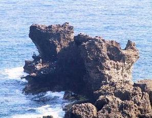
ATTRACTIONS · Day 1 生態殿堂
國立海洋生物博物館 (海生館)
🏞️ 台灣水域館
從小水滴的旅行開始，由谷關高山溪流、水庫、牡蠣養殖到壯麗大洋池，完整呈現台灣淡水與海洋生態。
🪸 珊瑚王國館
展現活珊瑚礁頂與垂直礁壁，擁有 80 公尺長夢幻海底隧道，並能近距離觀察海中金絲雀小白鯨。
🌍 世界水域館
全球首創 3D 虛擬無水水族館，展示古代海洋演化、高聳巨藻森林、深海生物與極地企鵝家族。
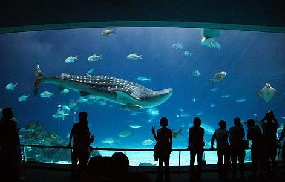
ATTRACTIONS · Day 1 熱鬧夜巡
墾丁大街夜巡（熱鬧夜市 ＆ 著名小吃 20 選）
🍢 墾丁大街不夜城 ＆ 著名小吃推薦
【必吃小吃 20 選精選】：
① 勇伯脆皮大腸包小腸 ② 墾丁Q蛋奶 ③ 一品滷味（自製辣椒） ④ 吳師傅魯味（蛇辣醬） ⑤ 巷子內十碗麵 ⑥ 酥炸脆皮鮮奶 ⑦ 烤飛魚卵香腸 ⑧ 炙燒火焰骰子牛 ⑨ 炭烤大魷魚 ⑩ 泰式香蕉煎餅 ⑪ 墾丁酥炸豆乳雞 ⑫ 拔絲地瓜與芋頭 ⑬ 港口茶香冰淇淋 ⑭ 酥脆炸蛋蔥油餅 ⑮ 現打枋山芒果冰沙 ⑯ 焗烤生蠔海鮮 ⑰ 原住民石板烤肉 ⑱ 鹽酥大蝦 ⑲ 恆春古早味綠豆蒜 ⑳ 烤青蛙下蛋檸檬愛玉
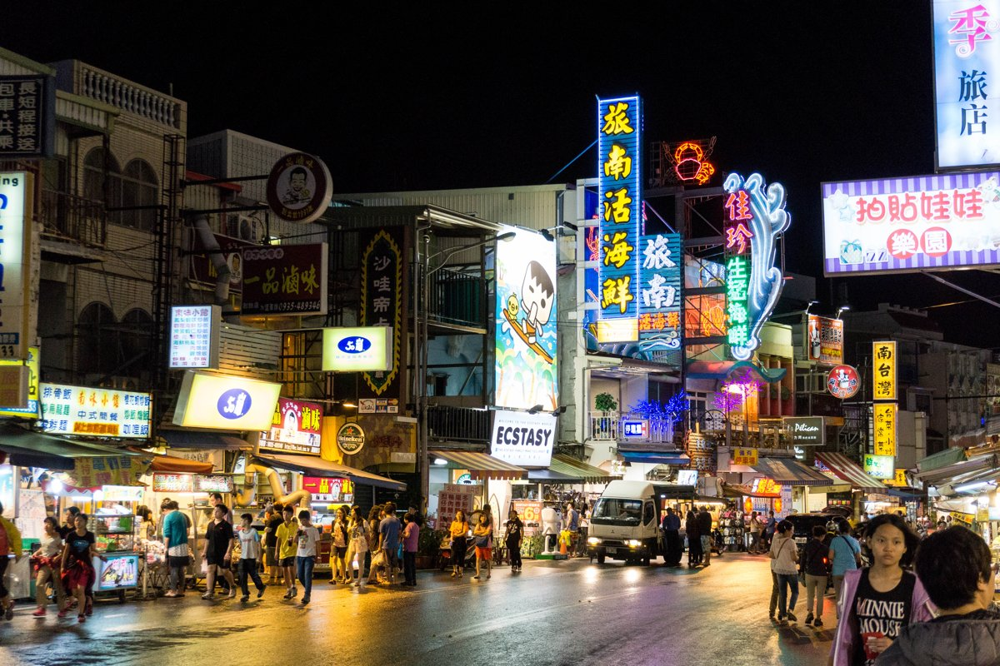
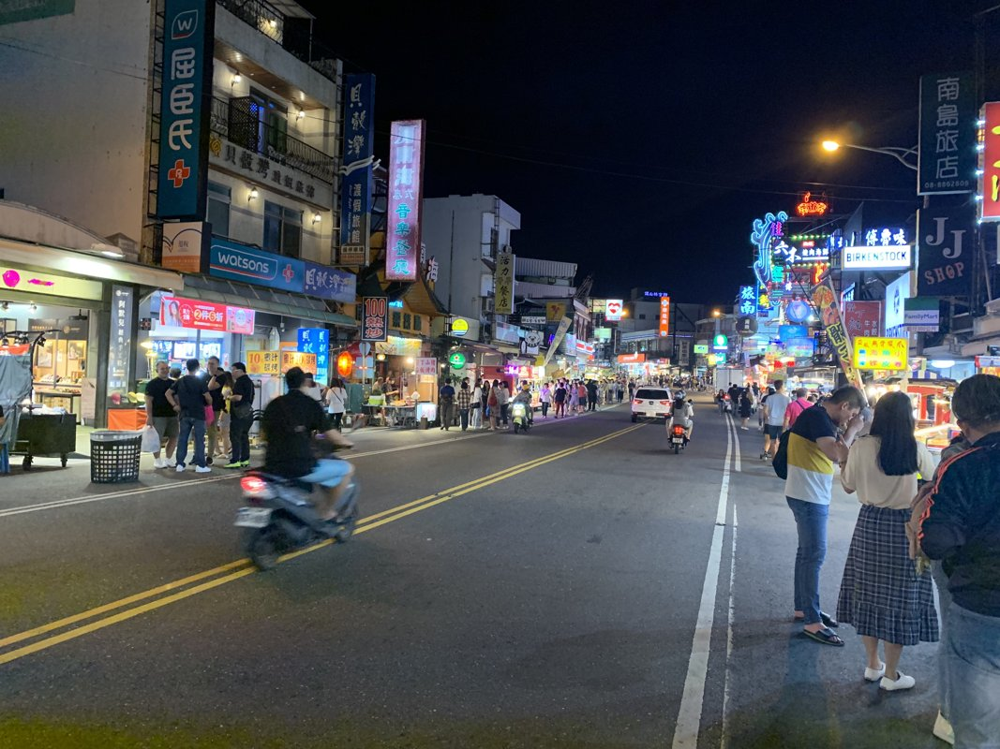
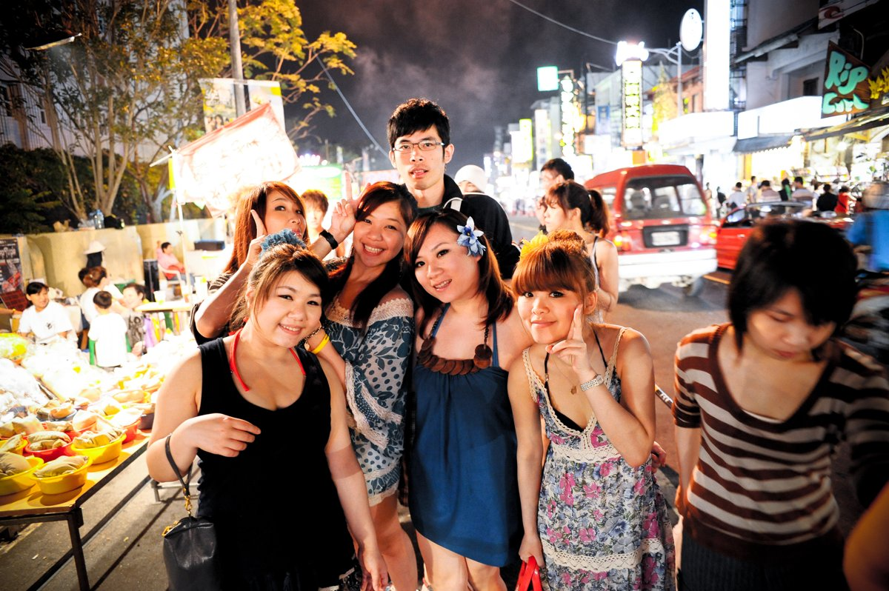
ATTRACTIONS · Day 1 渡假住宿
墾丁福華渡假大飯店（五星級濱海渡假勝地）
🏨 國境之南五星勝地 ＆ 專屬小灣海灘隧道
• 專屬小灣隧道：全台首創私密隧道，步行數分鐘直達小灣金黃沙灘。
• 豐富休閒設施：戶外泳池、健身房、大坪數休閒中心；鄰近熱鬧墾丁大街。
• 住宿提醒：依環保法規客房不提供一次性備品，請自備牙刷牙膏梳子；遵守晚點名與安寧規範。
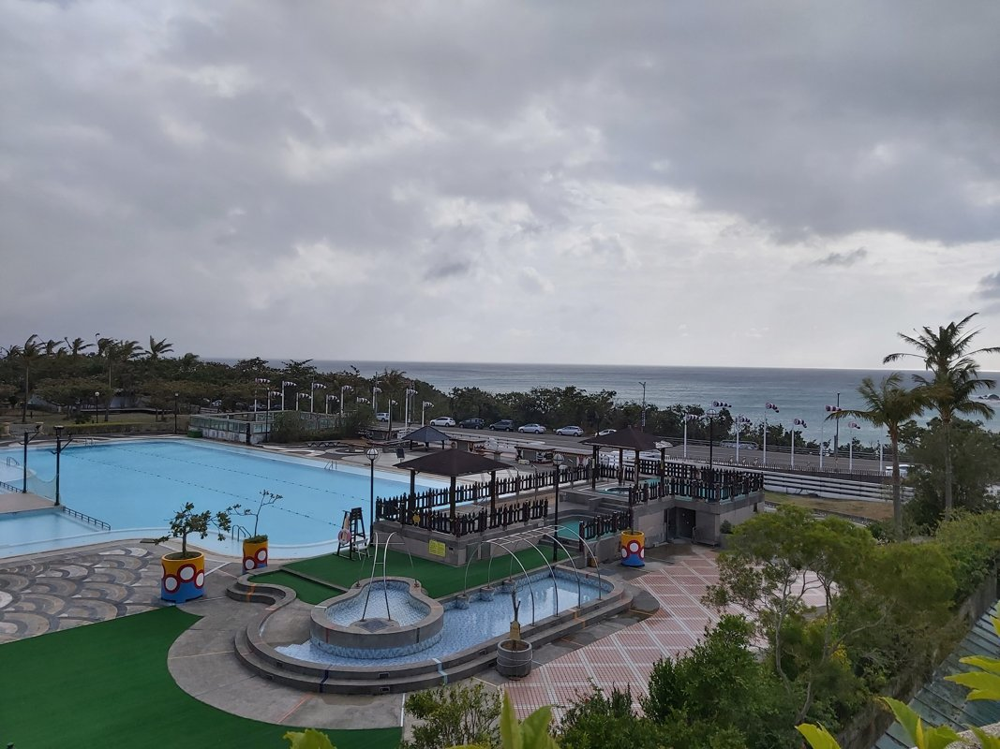
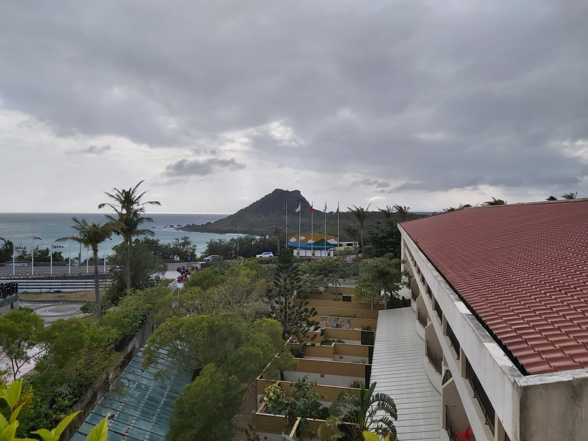
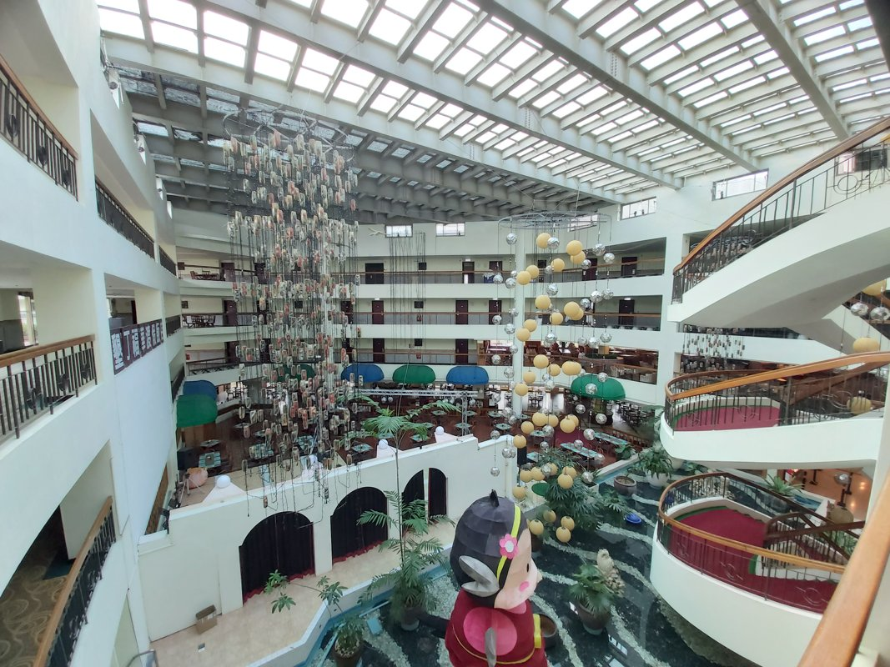
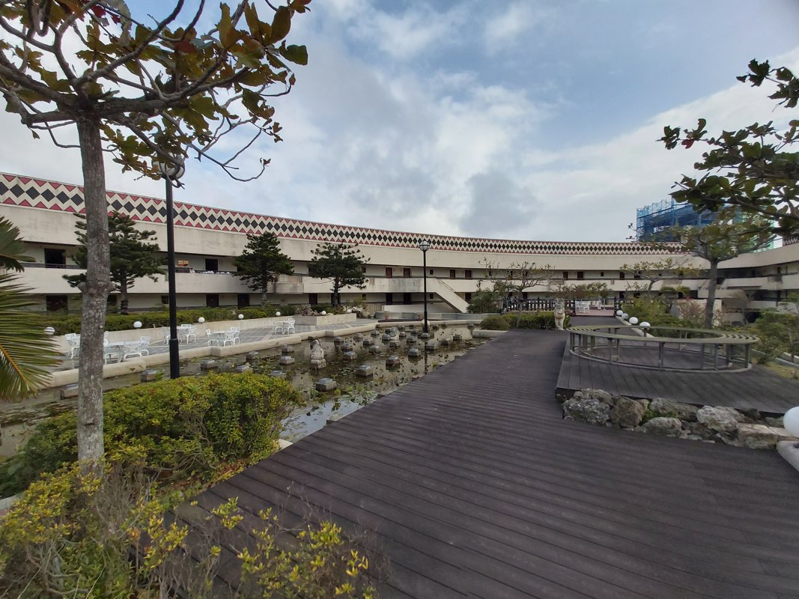
ATTRACTIONS · Day 2 狂歡冒險 ＆ 時尚休閒
義大遊樂世界 ＆ 購物廣場摩天輪
🎢 義大遊樂世界 ＆ 購物廣場摩天輪
- 希臘情境園區：衛城、藍白聖托里尼山城、特洛伊城三大區域。
- 特洛伊城：15000 坪全台最大室內主題館，包含巨大木馬、暗室雲霄飛車、飛越台灣模擬飛行。
- 海拔 215 米巨型摩天輪：直徑 80 公尺，南台灣最高景觀摩天輪，128 種炫彩燈光秀俯瞰高屏夜景。
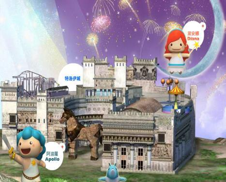
ATTRACTIONS · Day 2 璀璨住宿
高雄義大天悅飯店（義大核心英式新古典飯店）
🏰 英式新古典莊園 ＆ 漫步摩天輪商場
• 直通璀璨摩天輪：景觀天橋直通海拔 215 米巨型摩天輪與 Outlet 購物中心，飽覽歐洲山城夜景。
• 百匯自助早餐：百種中西式豐盛晨喚百匯料理，補足一日充沛活力。
• 住宿提醒：全面不提供一次性盥洗用品，請自備備品；晚間請按時就寢查房，切勿奔跑喧嘩。
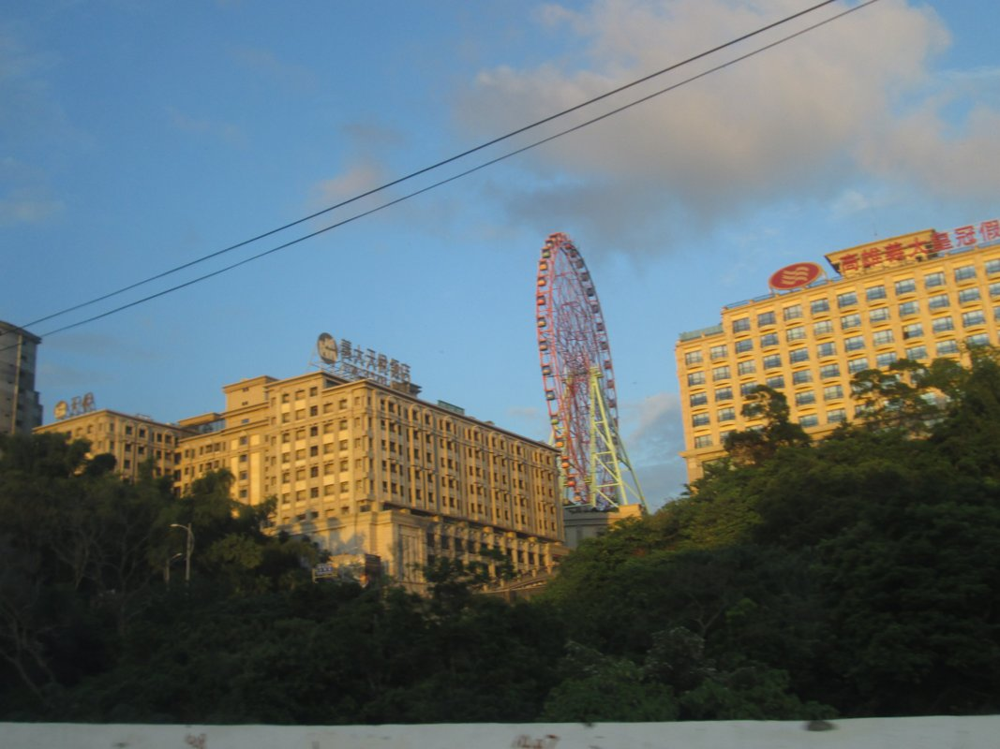
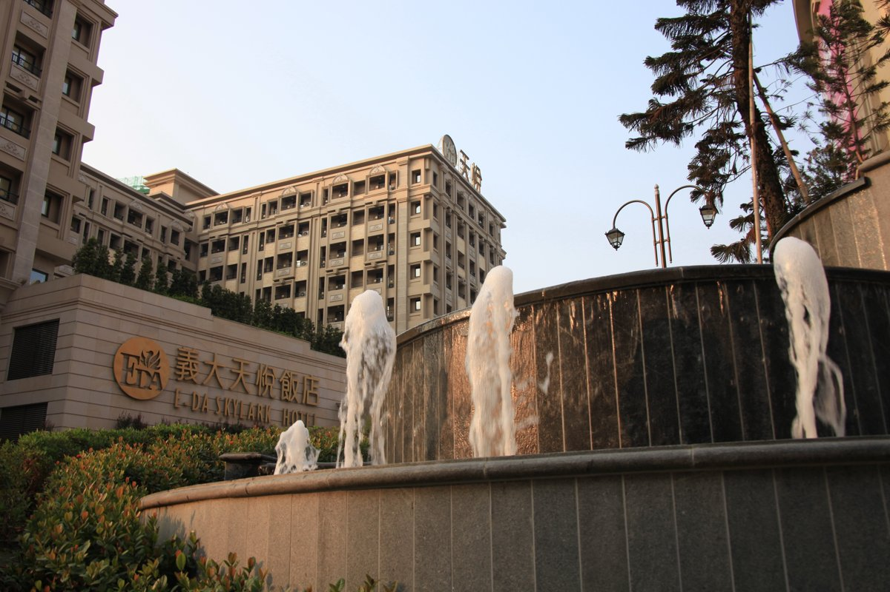
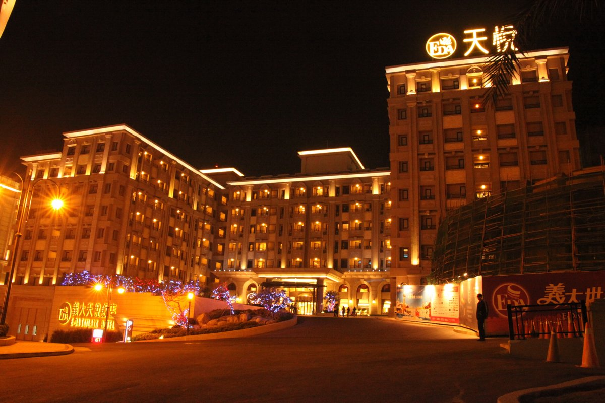
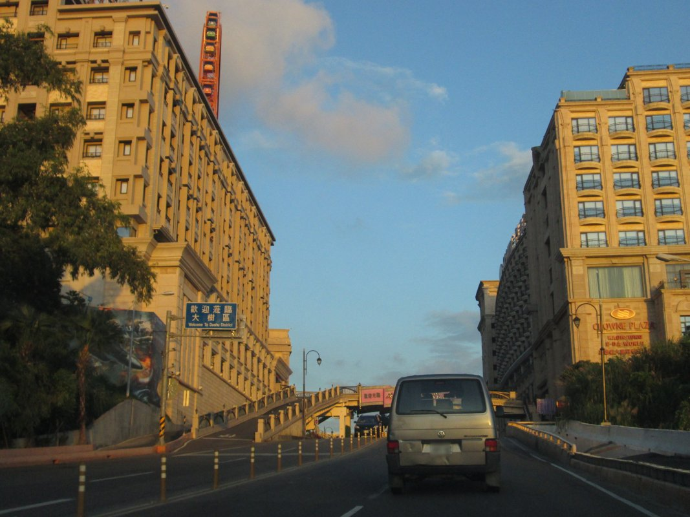
ATTRACTIONS · Day 3 港都史蹟 ＆ 文藝瑰寶
旗津風景區 ＆ 奇美博物館
⚓ 旗津史蹟（旗後砲台・星空隧道）
• 旗後砲台：清代海防要塞，營門題有「威震天南」。
• 星空隧道：原軍事通道改造，壁面彩繪十二星座夜光，出洞即臨大海。
• 旗津天后宮：建於1673年，高雄市最古老媽祖廟。
🏛️ 奇美博物館（西洋美學聖殿）
實業家許文龍先生捐資興建，秉持「屬於大眾共享的博物館」理念。館內典藏西洋繪畫雕塑、全球動物自然史、名琴樂器與古代兵器；戶外設有阿波羅噴泉與奧林帕斯神像橋。
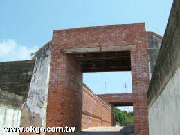
ATTRACTIONS · Day 3 生態樂園
名間親子生態園區（2.6公頃全齡共融樂園）
🌈 巨無霸彩虹滑梯 ＆ 全齡共融設施
• 5米巨無霸彩虹滑梯：雙道各 15 公尺超長磨石子滑道，搭配愛心草皮景觀。
• 全遮陽波浪防曬天幕：貼心波浪造型天幕，遊戲時防曬遮陽。
• 多元遊具與步道：環狀天空步道、攀爬網、共融鞦韆、沙坑區與生態水池，是返校前舒展合影首選。
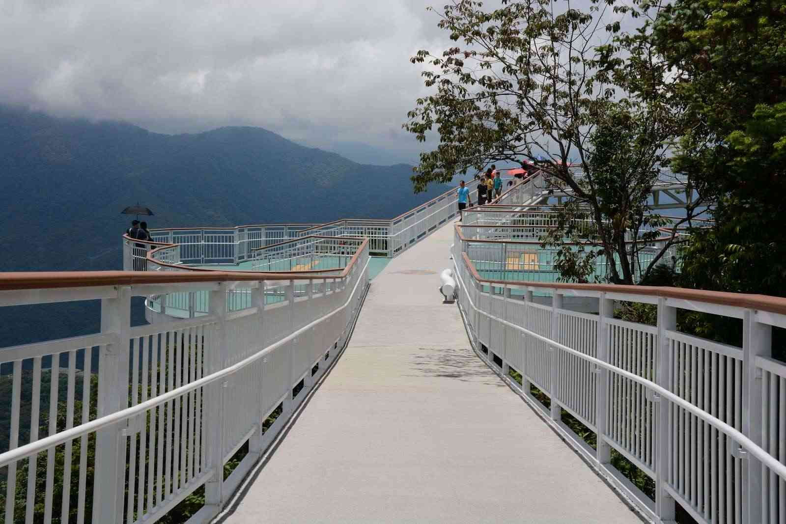
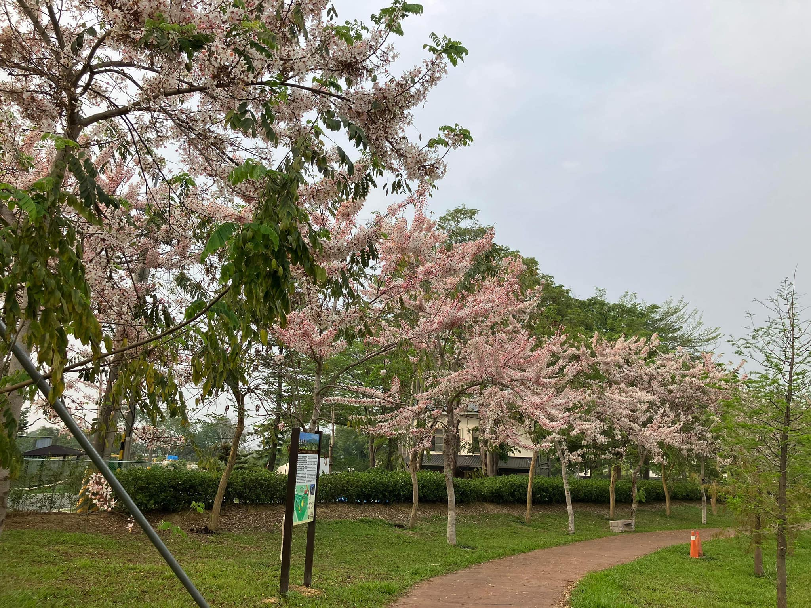
QUIZ · 海生館學習單
海洋知識是非挑戰題（精選題解）
01. 小丑魚與海葵
02. 海馬是魚類嗎？
03. 魚有舌頭嗎？
QUIZ · 趣味海洋知識
海生館問答題精選提要
| 題目 | 核心解答重點 |
|---|---|
| 珍珠如何形成？ | 蚌貝為防止進入殼內的砂礫異物引發組織發炎，分泌碳酸鈣珍珠層包覆，累積數年而成。 |
| 魷魚與花枝怎麼分？ | 魷魚（小管）鰭葉在尾部，有半透明幾丁質鞘；花枝（烏賊）鰭葉在身體周圍，有白色烏賊骨。 |
| 魚的年齡如何判斷？ | 看內耳石（耳石）橫切面生長同心輪紋，或將脊椎骨磨平觀察年輪。 |
| 四大毒魚口訣？ | 民間口訣：『一魟、二虎、三沙毛、四臭肚』（魟魚、獅子魚、鰻鯰、象魚）。 |
| 珊瑚礁三大分類？ | 1. 堡礁（澳洲大堡礁） 2. 環礁（東沙群島） 3. 裙礁（台灣墾丁貓鼻頭）。 |
CHECKLIST
行前必備行李打包檢核清單
🆔 重要證件與金錢
- 個人健保 IC 卡（隨身妥善保管）
- 適量零用金（紀念品與D2晚餐）
- 家中大門鑰匙、原子筆
👕 衣物與個人盥洗
- 換洗衣物 2~3 套（含薄外套防風）
- 自備牙刷、牙膏、毛巾（飯店不提供）
- 大行李箱（置車底）＋隨身雙肩包
- 換洗髒衣物塑膠袋數個
💊 隨身防護與常備藥品
- 個人常備藥物（氣喘、暈車藥等）
- 環保水壺（隨時補充水分）
- 遮陽帽、太陽眼鏡、防曬乳、防蚊液
- 輕便雨衣、行動電源與充電線
SAFETY FIRST
行程個人重要安全守則
- 守時第一：準時抵達指定集合地點，各班班長清點人數後向隨隊師長回報。
- 乘車安全：全程繫妥安全帶，車輛行進間嚴禁站立走動，頭手不可伸出窗外。
- 嚴禁脫隊：全程團隊行動，三五成群互相照應，絕不擅自進入無人危險區域。
- 未經安排嚴禁戲水：行程中未經學校許可，絕對禁止私自游泳玩水。
- 嚴禁違禁品：嚴禁攜帶菸酒、檳榔、不良書刊、牌具等，違者依校規嚴處。
- 尊重公私分際：嚴禁私下聯絡領隊，禁止私加領隊 LINE、FB、IG 等社群。
- 愛護公物：飯店內嚴禁使用染髮劑或指甲油，損壞物品需照價賠償。
- 身體不適即時通報：遇有突發狀況或身體微恙，立刻向導師或領隊告知。
HOTEL GUIDELINES
飯店住宿生活公約與逃生要領
🛌 住宿生活公約
- 走廊各區域放輕腳步、輕聲細語，共同維護住宿品質。
- 夜間按規定時間準時就寢，晚點名務必在自己房內。
- 嚴禁擅自調換房間或跨房喧嘩聊天。
- 保護自身安全，絕對禁止在彈簧床上彈跳。
- 使用過的濕毛巾放回浴室架，切勿丟在被褥上。
🧯 防災避難逃生要領
- 進房第一件事：查看門後安全避難逃生路線與安全門位置。
- 若遇火災警報：冷靜不慌張，聽從服務人員引導。
- 以浸濕衣物捂住口鼻、放低身段往安全梯逃生。
- 下樓千萬不可搭乘電梯！
- 出房門前先以手背測試門板溫度，防止開門爆燃。
HEALTH ＆ WELLNESS
預防暈車妙方 ＆ 三大指壓穴位
👉 合谷穴
👉 內關穴
👉 足三里穴
EMERGENCY FIRST AID
急救小常識與緊急應變
🩸 流鼻血處置
1. 患者坐正，頭部稍微向前傾（切勿後仰，以免血液倒流嗆入氣管！）。
2. 用乾淨濕紙巾塞住鼻孔，以手指捏緊鼻翼軟骨壓迫 10 分鐘。
3. 在額頭與鼻樑處冰敷冷敷，促使血管收縮止血。
☀️ 中暑熱傷害處置
1. 立即將患者移至陰涼通風處，解開領口與腰帶。
2. 以濕毛巾、冷水或冰袋敷於頸部、腋下及鼠蹊部降溫。
3. 意識清楚者可少量多次補充淡鹽水或運動飲料，並通報師長。
南投縣立南投國民中學
青春不留白・精彩每一刻！
祝 全體九年級師生 畢旅平安順利、收穫滿載、珍藏最美回憶！